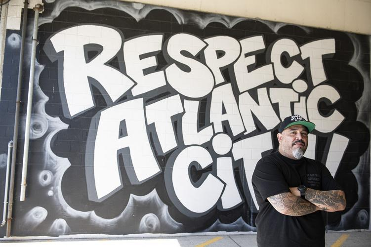

The Story Behind the City

Atlantic City has always been two cities at once. There is the city the world sees: the neon, the casinos, the boardwalk and then there is the city that residents actually live in. The real Atlantic City is a majority-Black city with a rich cultural history, a tight-knit community, and a food scene that has nothing to do with the resort industry built around it.
For decades, the promise of casino revenue was supposed to lift the whole city. It didn't. But the community persisted, and so did its restaurants, its traditions, and its identity. The food here tells that story better than any policy paper could. Every family-owned spot that has survived is an act of resilience. Atlantic Bites exists to make sure those places get the recognition they deserve.
Community Voice
"People always ask me why I never left Atlantic City. I tell them this city made me. The food, the people, the culture. You can't find this anywhere else on the Shore. We're still here, and we're not going anywhere."
- Long-time Atlantic City resident
Suggest a Food or Spot
Know a restaurant, dish, or local food tradition we should feature? Tell us about it.